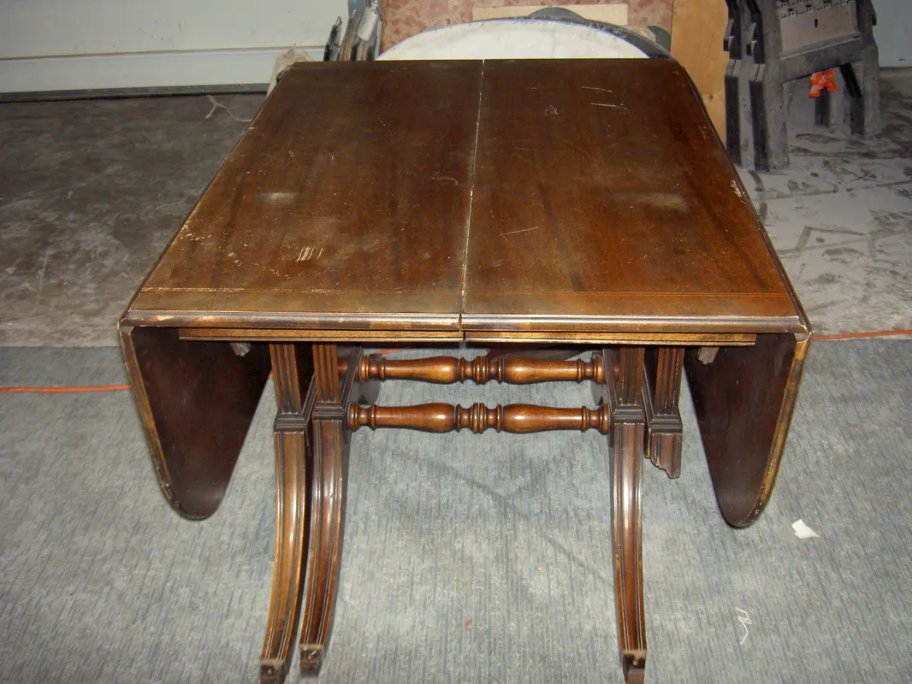
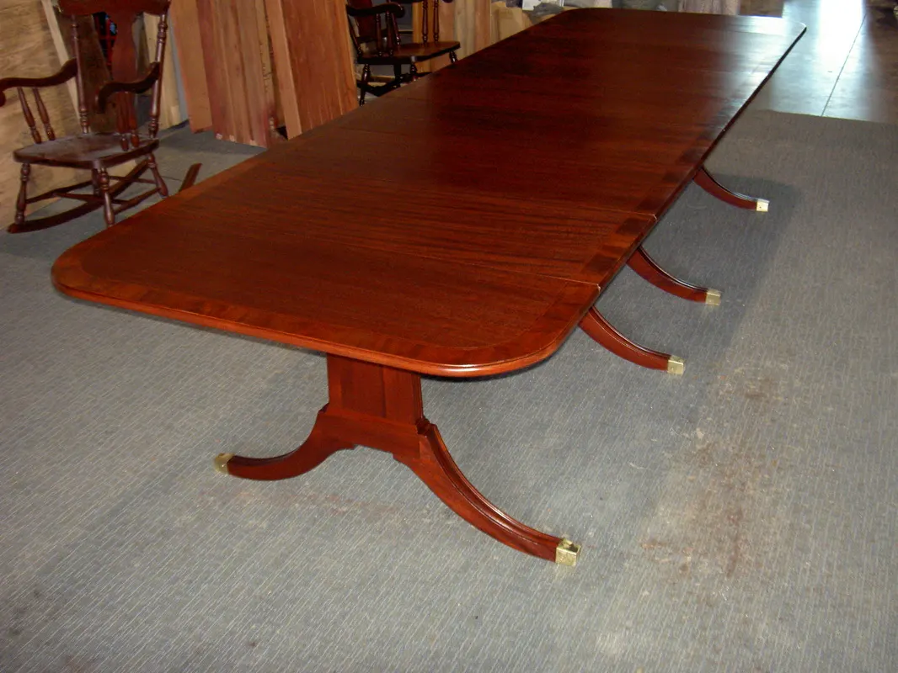

The flagship craft · DC · MD · VA
Down to the bare wood.
Stripping, repair, color and finish, all of it by hand — furniture refinishing and antique restoration for Washington DC, Maryland and Virginia.
How a finish comes off
First, we take everything away.
Every refinishing project in our shop begins the same way: the old finish comes off by hand, and the piece comes down to bare wood. We never use acids, high-pressure water or dipping tanks — the shortcuts that blur carving, lift fragile veneer and bleach the life out of old wood.
Working with environmentally safe products and a patient hand, we strip, clean and sand until the grain finally shows its depth. It is slower this way. It is also the only way to arrive at a period-correct finish — one that keeps the warmth of the wood and the worth of the antique intact.
Start with a free estimate →

Choosing the topcoat
Three ways to finish.
Hand-rubbed oil
An oil finish is worked into the wood rather than laid over it — low sheen, close to the grain, warm to the touch. It suits pieces that should feel like wood first and furniture second.
Non-yellowing lacquer
For pieces that must earn their keep — dining tables, dressers, kitchen cabinets — we use a high-quality non-yellowing lacquer, built up in coats until the piece has the protection it needs. On the Federal Style Collection, three coats saw a set of fragile heirlooms safely into the next generation.
Traditional French polish*
The finish of the great 18th- and 19th-century cabinetmakers, and the one that earns its place on the finest antiques — deep, clear and luminous in a way no sprayed coating can imitate.
Whichever finish is right for your piece, you choose the stain on the actual wood, in the shop, with as many samples as it takes.

Antique restoration
Repair that protects the value.
An antique is only restored if it is still, recognizably, itself. Our repairs use period-appropriate techniques so the piece keeps its tone — and its worth.
- Re-gluing loose joints, frames and moldings
- Veneer replacement — missing pieces replaced, loose and bubbled veneer steamed and re-glued
- Replacement of missing or broken pieces, carved to match
- Color and stain matching on the piece itself
- Hardware, keyholes and moldings rebuilt or sourced
We also work with insurance claims for fire, smoke and water damage, and bring the same hand methods to kitchen cabinet refinishing. If it’s wood, we can probably work on it.


From our ledger
The proof is in the plates.


{kind=link}

{kind=link}

Under that tired finish, the wood is waiting.
Email a few photos of your piece — we’ll tell you quickly, and at no charge, what the wood needs and what it will cost.